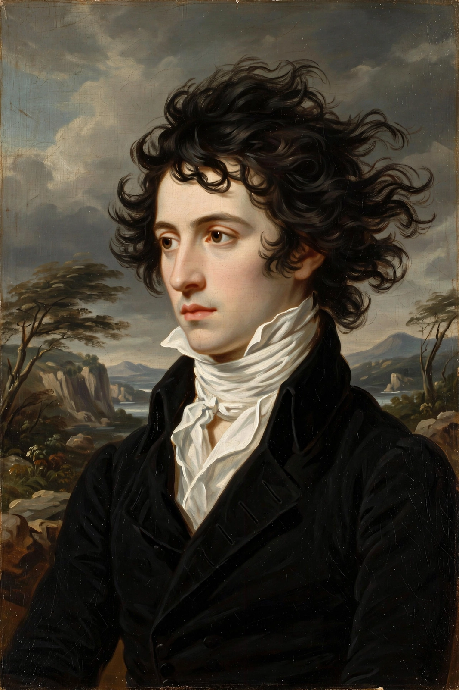

Percy Bysshe Shelley
From Wikipedia, the free encyclopedia

Percy Bysshe Shelley (4 August 1792 – 8 July 1822) was an English Romantic poet, author of Ozymandias, Ode to the West Wind, To a Skylark and the verse drama Prometheus Unbound. Little read in his lifetime and notorious for his atheism and radical politics, he is now ranked among the finest English lyric poets; he drowned in a storm off Italy aged 29.
Life
Shelley was born at Field Place, Sussex, heir to a baronetcy, educated at Eton College and Oxford, from which he was expelled in 1811 for the pamphlet The Necessity of Atheism. He eloped with Harriet Westbrook, then in 1814 with Mary Wollstonecraft Godwin — later Mary Shelley, author of Frankenstein — daughter of William Godwin and Mary Wollstonecraft. The summer of 1816 at Lake Geneva with Lord Byron produced Frankenstein and some of Shelley's finest work; from 1818 he lived in Italy, writing Prometheus Unbound, Adonais (his elegy for John Keats) and The Mask of Anarchy, his furious response to the Peterloo Massacre.
Poetry and thought
Shelley's work fuses lyrical intensity with revolutionary politics: he attacked monarchy, war, religion and the meat trade (Queen Mab, 1813), championed nonviolent resistance and Irish and Greek independence, and theorised poetry's moral force in A Defence of Poetry (written 1821), which ends by calling poets 'the unacknowledged legislators of the world'.
Death and reputation
Shelley drowned on 8 July 1822 when his boat, the Don Juan (renamed Ariel), sank in a storm in the Gulf of La Spezia returning from Livorno. His body was cremated on the beach at Viareggio in the presence of Byron and Trelawny. Victorian readers, led by Mary Shelley's edition of his poems, rescued his reputation; radicals from Karl Marx to Mahatma Gandhi have quoted him.